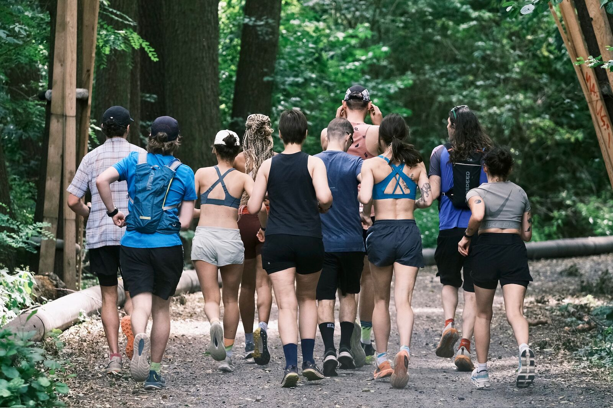

<!doctype html>
<!-- Open Graph card template, 1200×630. Not served: render.sh screenshots it into
     site/og/<card>.jpg. Open card.html?card=<name> over http (render.sh starts a
     server at the repo root) so the fonts, crest and route SVGs load from site/. -->
<html lang="en">
<head>
<meta charset="utf-8">
<title>OG card</title>
<style>
  @font-face{font-family:'Alfa Slab One';src:url('../../site/fonts/AlfaSlabOne-Regular.woff2') format('woff2')}
  @font-face{font-family:'Archivo';src:url('../../site/fonts/archivo.woff2') format('woff2');font-weight:400 700}
  /* Same values as the tokens in site/styles.css. */
  :root{
    --purple:oklch(40% .140 314.6); --purple-deep:oklch(32% .120 314.6);
    --on-purple:oklch(99% .003 308); --volt:oklch(83.5% .189 115.1);
    --night:oklch(18.7% .022 297);  --muted:oklch(70.4% .032 305);
    --dsp:'Alfa Slab One',serif; --body:'Archivo',system-ui,sans-serif;
  }
  *{box-sizing:border-box;margin:0}
  html,body{inline-size:1200px;block-size:630px;overflow:hidden}
  body{background:var(--purple-deep);color:var(--on-purple);font-family:var(--body);
    font-synthesis:none;-webkit-font-smoothing:antialiased}
  .card{position:relative;inline-size:1200px;block-size:630px;display:grid}
  .stripes{position:absolute;inset-inline:0;inset-block-end:0;display:flex;gap:5px;block-size:14px;
    background:var(--purple-deep)}
  .stripes i{flex:1;background:var(--volt)}
  .stripes i:nth-child(2){opacity:.34}.stripes i:nth-child(3){opacity:.72}
  .stripes i:nth-child(4){opacity:.20}.stripes i:nth-child(5){opacity:.55}
  .brand{display:flex;align-items:center;gap:16px;font-weight:700;font-size:20px;
    letter-spacing:.22em;text-transform:uppercase;color:var(--volt)}
  .brand img{block-size:64px}
  .url{font-weight:700;font-size:22px;letter-spacing:.08em;color:color-mix(in oklab,var(--on-purple) 75%,transparent)}

  /* Run card: text left, route map right. */
  .run{grid-template-columns:1fr 500px}
  .run .text{padding:52px 40px 64px 64px;display:flex;flex-direction:column;min-inline-size:0}
  .run h1{font-family:var(--dsp);font-weight:400;font-size:88px;line-height:1.05;margin-block-start:8px;
    white-space:nowrap;letter-spacing:-.005em}
  .run .mark{font-size:52px;line-height:1;margin-block-start:auto}
  .run .when{font-family:var(--dsp);font-size:42px;color:var(--volt);margin-block-start:18px}
  .run .facts{display:flex;gap:14px;flex-wrap:wrap;margin-block-start:26px}
  .run .facts span{font-weight:700;font-size:22px;padding:8px 14px;
    border:2px solid color-mix(in oklab,var(--on-purple) 35%,transparent)}
  .run .where{display:flex;align-items:center;gap:10px;font-size:24px;margin-block-start:22px}
  .run .where svg{inline-size:26px;block-size:26px;color:var(--volt);flex:none}
  /* The inlined maps carry a global path{fill:none}; keep the pin filled. */
  .run .where svg path{fill:currentColor}
  .run .foot{display:flex;justify-content:space-between;align-items:baseline;margin-block-start:16px}
  .map{color-scheme:dark;color:var(--on-purple);background:var(--night);position:relative;
    display:grid;align-content:center;gap:10px;padding:24px 20px 50px}
  .map svg{inline-size:100%;block-size:auto;display:block}
  .map.two{grid-template-rows:1fr 1fr;padding-block:20px 50px}
  .map.two figure{display:grid;grid-template-columns:auto 1fr;align-items:center;gap:8px}
  .map.two svg{block-size:250px;inline-size:auto;justify-self:center}
  .map figcaption{writing-mode:vertical-rl;rotate:180deg;font-weight:700;font-size:15px;
    letter-spacing:.2em;text-transform:uppercase;color:var(--muted)}
  .osm{position:absolute;inset-inline-end:18px;inset-block-end:24px;font-size:14px;color:var(--muted)}

  /* Home card: photo under the hero's purple overlay, crest and name centred. */
  .home{place-items:center;text-align:center;overflow:hidden}
  .home .photo{position:absolute;inset:0;inline-size:100%;block-size:100%;object-fit:cover;object-position:50% 40%}
  .home::before{content:"";position:absolute;inset:0;z-index:1;
    background:linear-gradient(color-mix(in oklab,var(--purple) 78%,transparent),color-mix(in oklab,var(--purple-deep) 92%,transparent))}
  .home .inner{position:relative;z-index:2;display:grid;justify-items:center;padding-block-end:20px}
  .home .crest{block-size:150px}
  .home h1{font-family:var(--dsp);font-weight:400;font-size:118px;line-height:1;margin-block-start:18px}
  .home .rule{inline-size:560px;block-size:4px;background:var(--volt);margin-block:22px 20px}
  .home p{font-size:32px;font-weight:700}
  .home .url{margin-block-start:18px}
  .stripes{z-index:3}
</style>
</head>
<body>
<div id="card"></div>
<script>
// Facts mirror site/runs/*.html; keep them in step when a run changes.
const RUNS = {
  "monday-duck":      { mark:"🦆", name:"Monday Duck",      when:"Every Monday · 18:30",   facts:["~8 km","5:45–6:30 min/km"], where:"East of the Siegessäule, Tiergarten", maps:["monday-duck-map"] },
  "tuesday-track":    { mark:"🎽", name:"Tuesday Track",    when:"Every Tuesday · 19:15",  facts:["5–10 km","Every pace"],        where:"Track posted each week in Discord",  maps:["tuesday-track"], osm:false },
  "thursday-swan":    { mark:"🦢", name:"Thursday Swan",    when:"Every Thursday · 06:45", facts:["~7 km","5:30–6:00 min/km"],        where:"Prisma Pavillon, Landwehrkanal",     maps:["thursday-swan-map"] },
  "friday-dachshund": { mark:"🐕", name:"Friday Dachshund", when:"Every Friday · 12:30",   facts:["~6 km","5:45–6:30 min/km"], where:"DDR Museum, Mitte",                  maps:["friday-dachshund-map"] },
  "saturday-parkrun": { mark:"🌳", name:"Saturday parkrun", when:"Every Saturday · 09:00", facts:["5 km","Timed, your own pace"],  where:"Hasenheide or Tempelhofer Feld",     maps:["hasenheide-parkrun-map","tempelhofer-feld-parkrun-map"], captions:["Hasenheide","Tempelhofer Feld"] },
};
const PIN = '<svg viewBox="0 0 24 24" aria-hidden="true"><path fill="currentColor" d="M12 2a7 7 0 0 0-7 7c0 5 7 13 7 13s7-8 7-13a7 7 0 0 0-7-7Zm0 9.5A2.5 2.5 0 1 1 12 6.5a2.5 2.5 0 0 1 0 5Z"/></svg>';
const STRIPES = '<div class="stripes"><i></i><i></i><i></i><i></i><i></i></div>';
const CREST = '../../site/crest-knockout.png';

async function svg(name) {
  // Inline, not : the maps use light-dark() and currentColor, which only
  // follow the card's dark panel when they are part of the document.
  const text = await (await fetch(`../../site/routes/${name}.svg`)).text();
  return text.replace(/\s(width|height)="\d+"/g, "");
}

async function render() {
  const key = new URLSearchParams(location.search).get("card") || "home";
  const el = document.getElementById("card");
  if (key === "home") {
    el.className = "card home";
    el.innerHTML = `
      
      <div class="inner">
        
        <h1>Berlin Harriers</h1>
        <div class="rule"></div>
        <p>Free, English-speaking running club · Five runs a week</p>
        <div class="url">berlinharriers.de</div>
      </div>${STRIPES}`;
  } else {
    const r = RUNS[key];
    if (!r) throw new Error(`unknown card ${key}`);
    const maps = await Promise.all(r.maps.map(svg));
    const panel = maps.length > 1
      ? `<div class="map two">${maps.map((m, i) => `<figure><figcaption>${r.captions[i]}</figcaption>${m}</figure>`).join("")}`
      : `<div class="map">${maps[0]}`;
    el.className = "card run";
    el.innerHTML = `
      <div class="text">
        <div class="brand">Berlin Harriers</div>
        <div class="mark">${r.mark}</div>
        <h1>${r.name}</h1>
        <div class="when">${r.when}</div>
        <div class="facts">${r.facts.map(f => `<span>${f}</span>`).join("")}<span>Free</span></div>
        <div class="where">${PIN}${r.where}</div>
      </div>
      ${panel}${r.osm === false ? "" : '<small class="osm">© OpenStreetMap contributors</small>'}</div>
      ${STRIPES}`;
  }
  await document.fonts.ready;
  // Long names ("Friday Dachshund") shrink until they fit on one line.
  const h1 = el.querySelector(".run h1");
  if (h1) { let size = 88; while (h1.scrollWidth > h1.clientWidth && size > 56) h1.style.fontSize = `${size -= 2}px`; }
  await Promise.all([...document.images].map(i => i.decode().catch(() => {})));
  document.body.dataset.ready = "1";
}
render();
</script>
</body>
</html>
